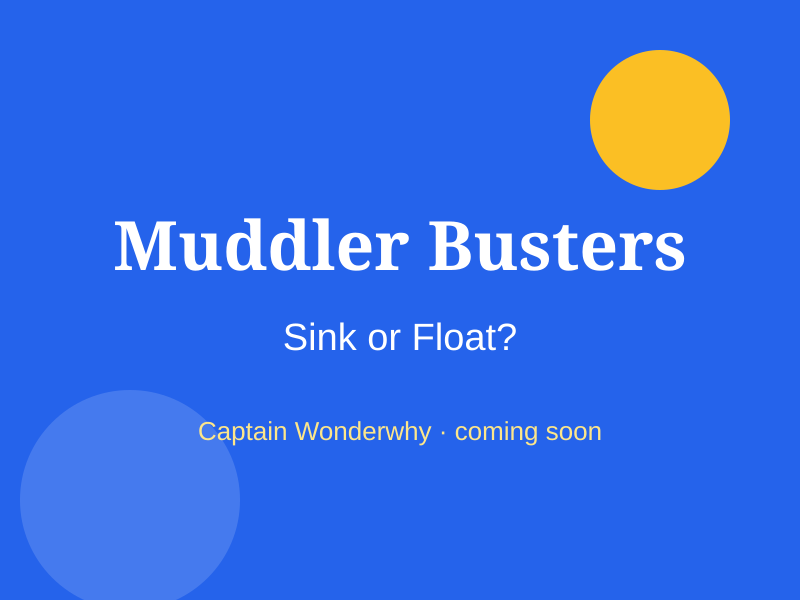
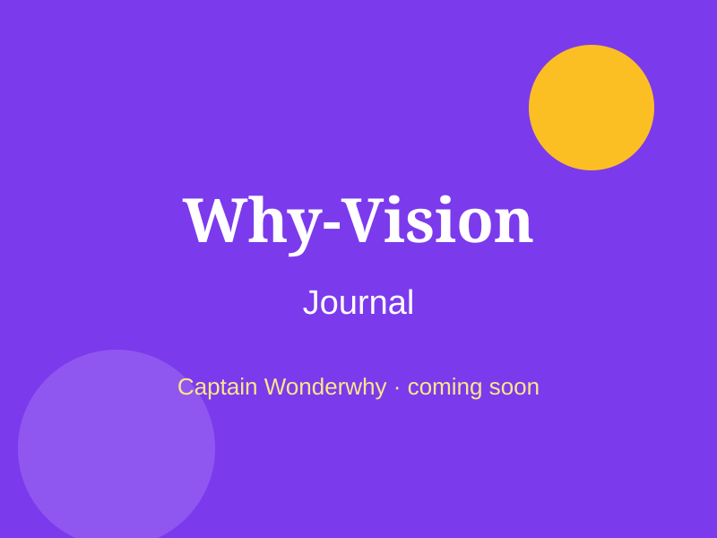
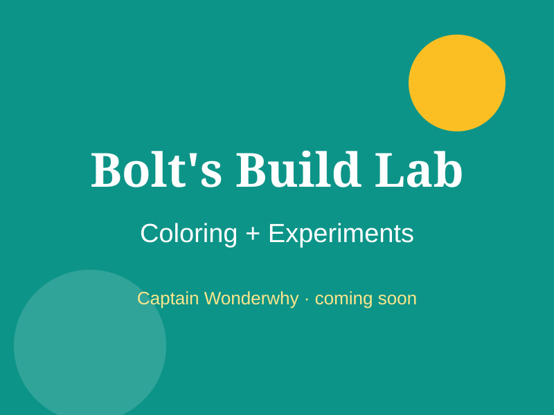

Fact or Fog? The sink-or-float game
The Muddler says: "Heavy things always sink!" Let's check. For each thing: predict, drop it in a bowl of water, then record what really happened.
| Thing | I predict | What happened |
|---|---|---|
| Apple | ||
| Grape | ||
| Coin | ||
| Cork | ||
| Crayon | ||
| Ball of foil | ||
| Ice cube | ||
| Plastic spoon | ||
| Metal spoon | ||
| Lego brick |
Grown-ups: supervise around water, and use only safe, non-choking-size objects for younger kids.
Free printable pages
Muddler Busters Mission 1
Do heavy things always sink? Experiment + record sheet.
Why-Vision: Shadow Watch
Notice, wonder, test, find out.
Bolt's Paper Bridge
Color it, then build it for real.
The full packs

Muddler Busters Pack 1: Sink or Float
The Muddler is spreading fake facts: "Heavy things always sink!". Kids run five real kitchen experiments, record what happens, and decide: FACT or FOG? It's early science thinking, not worksheets.

The Why-Vision Journal
Kids ask "why?" all day long. This journal turns those questions into tiny investigations: notice, wonder, test, find out, with Captain Wonderwhy cheering them on.

Bolt's Build Lab
Color Bolt the robot, then build the thing on the page for real: a paper bridge, a balloon rocket, a cup phone. Eight coloring + build pairs that sneak engineering into a rainy afternoon.